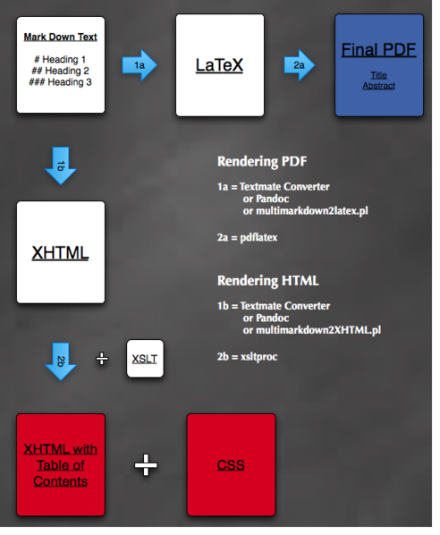
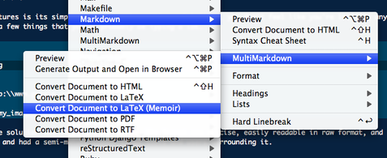

Documentation is not hard though there is a temptation to make it so. In this post, we’ll go over the details of generating documentation that can be exported to PDF and HTML from one source file.
I wanted to generate some end-user help manuals for one of my projects at work, and I wanted to print it as a nicely typeset PDF as well as display it in HTML. Writing in Mac OSX’s Pages or in raw HTML was out of the question because neither of these formats could eventually be converted to anything else without losing the nice formatting. They were siloed in their own worlds and adding links & images in either document formats was tedious.
For this reason, I knew that whatever I wrote, I had to write it in a simple “meta” format that could eventually be exported to HTML and PDF.
For a brief moment along this path, I was led astray by xml, docbook, toolchains, and a dizzying myriad of other meta format options. I spent hours trying to memorize the Docbook syntax. I banged my head for another hour trying to locate the XSLT stylesheets, and finally, I struggled to find the right tools to transform all of this junk into a meaningful html or pdf document. XML involved too much fluff, too much stuff that I had to learn just to get a simple task done. On top of all that, the raw document, raw output, and most of the sites that championed XML/DOCBook were ugly. Needless to say, by the time I figured out everything, I had made 0% progress on writing any documentation.
Luckily for me, salvation came. It arrived in the form of [MultiMarkdown], a simple format to markup your text without the unnecessary bloat of xml. With MultiMarkdown and a combination of other tools I was able to generate the final forms of my documentation. You can get an overview of the process from the diagram below. As you can see, I did end up using a small bit of XML technology (specifically XSLTs) to generate a table of contents from my MultiMarkdown XHTML output.

To get started, all you need is something to convert your MultiMarkdown documents into the desired format. For this task you can either download [pandoc], or the conversion scripts from the creator of MultiMarkown’s site. Although [pandoc] looks like a promising tool, I personally had trouble installing it on my computer because of issues with macports & ghc.
One of MultiMarkdown’s best feature is its simple-to-learn syntax. It’s so intuitive, you don’t feel like you’re learning anything new at all. Below are a few commands to help you get started. For further help in TextMate, use the Control+H key combo to pull up the built in cheatsheet.
# This is an H1 tag
## This is an H2 tag
### This is an H3 tag
... And so on
[This is a Link](http:\\www.google.com)

CSS: style.css
The last command, “CSS: style.css” tells the MultiMarkdown converter to link up style.css to the converted html file. I like to include it at the very top of any markdown document so that I can later stylize it with my own custom CSS.
Converting your MultiMarkdown to html is a simple process:
Run multimarkdown2XHTML.pl provided in the “bin” directory of the MultiMarkdown distribution to transform your text.
multimarkdown2XHTML.pl file.markdown > file.html
Add a table of contents using xsltproc and xhtml-toc-h2.xslt
xsltproc xhtml-toc-h2.xslt file.html > file_with_toc.html
Stylize your final HTML with some nice CSS. Here’s the CSS that I’ve used for my own documentation. It’s a modification on the oh-so-beautiful FreeBSD documentation theme.
Converting to PDF basically follows the same path, just with some different tools.
Run multimarkdown2latex.pl provided in the “bin” directory of the MultiMarkdown distribution to transform your text into LaTex.
multimarkdown2latex.pl file.markdown > file.tex
Add some LaTex formatting options if needed. For example, I added the following options to prevent indentation at the beginnings of paragraphs.
\setlength{\parindent}{0em}
Use [pdflatex] to turn the output from the previous step into a PDF.
pdflatex file.tex
If you’re lucky enough to have TextMate, all of these conversion mentioned above scripts are prepackaged in the “MarkDown” bundle for you.

So there you have it. With MultiMarkdown, you write one document and transform it into PDF and HTML with some basic tools. Overall, the format is concise, easily readable in raw format, and easy to maintain since it’s just plain-ol text. It is versatile, and has a mature set of tools to work with it. I’ve come to love it just as the creator of TextMate, and many others have. For small to medium projects, it’s the perfect documentation tool.
If you’re wondering what the final results look like, I wrote this article in markdown and sample of the Markdown, PDF, and XHTML that I generated.